Dank
Wir möchten uns bei folgenden Personen und Firmen bedanken, ohne die dieser
Wettbewerb nicht möglich gewesen wäre:
- den Einsendern der fast 300 Vorschläge,
- der Schirmherrin des Wettbewerbs, Grietje Bettin,
- den Sponsoren der Preise
- Malte Kaldewey für die Bereitstellung der
Webseiten
für die Plakatvorschläge,
- der Firma WS Medienservice Chemnitz GmbH
für die Einblendung der Vorschläge / Gewinner auf unserer Startseite.
Die Gewinner
|
- Platz 1
- Marco Weismüller
- Personal Computer
Quelle des zugrundeliegenden Fotos
ist PhotoCase.de.
Das Foto wurde zur Verfügung gestellt von skyphab.com.
|
| 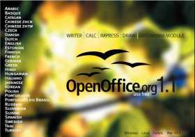 |
- Platz 2
- Lennart Helal
- eine Digitalkamera HP PhotoSmart 320
|
|
- Platz 3
- Sabrina Huber
- Eintritt zur OpenOffice.org Conference 2004 und zwei Übernachtungen in Berlin
|
|
- Platz 4
- Johannes Arndt
- Suse Linux Distribution
Quelle des zugrundeliegenden Fotos ist PhotoCase.de.
|
| 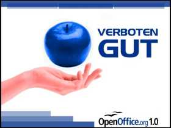 |
- Platz 5
- Georgios Chatzis
- Suse Linux Distribution
|
|
- Platz 6
- Lars Kiesow
- Suse Linux Distribution
|
| 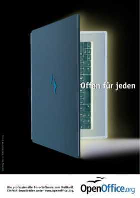 |
- Platz 7
- Sandra Wollny
- Suse Linux Distribution
|
| 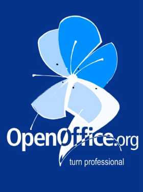 |
- Platz 8
- Christiane Geier
- Suse Linux Distribution
|
| 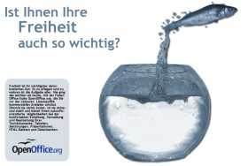 |
- Platz 9
- Moritz Beller
- Suse Linux Distribution
|
|
- Platz 10
- Hauke Heyen
- Suse Linux Distribution
|
| 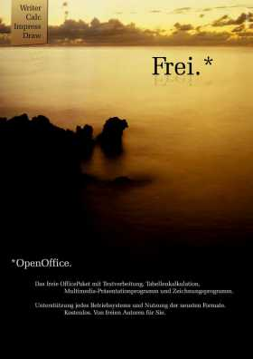 |
- Platz 11
- Lennart B.
- Suse Linux Distribution
|
| 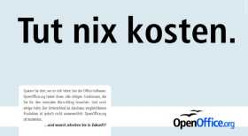 |
- Platz 12
- Adrian Nussbaum
- Suse Linux Distribution
|
| 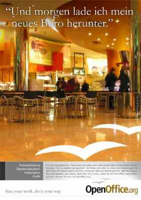 |
- Platz 13
- Danial Korioth
- Suse Linux Distribution
|
| 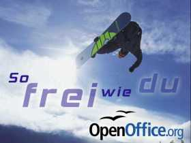 |
- Platz 14
- Jochen Christ
- Suse Linux Distribution
|
| 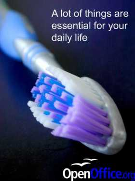 |
- Platz 15
- Daniel Gysin
- Webspace (50 MB) für zwei Jahre
|
| 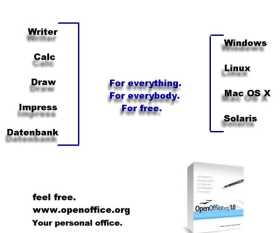 |
- Platz 16
- Mischa Schleimer
- Webspace (50 MB) für zwei Jahre
|
|
- Platz 17
- Bernhard Ruff
- Internetauftritt inklusive Content Management System
|
 |
- Platz 18
- Ralf Leifel
- Jahresabo (Linux User, Linux Magazin oder Easy Linux)
|
| 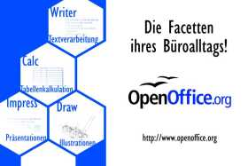 |
- Platz 19
- Markus Winkelmann
- Jahresabo (Linux User, Linux Magazin oder Easy Linux)
|
|
- Platz 20
- Anton Kahr
- Jahresabo (Linux User, Linux Magazin oder Easy Linux)
|
| 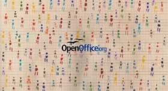 |
- Platz 21
- Mareike Eigenwillig
- Pinguinstofftier
|